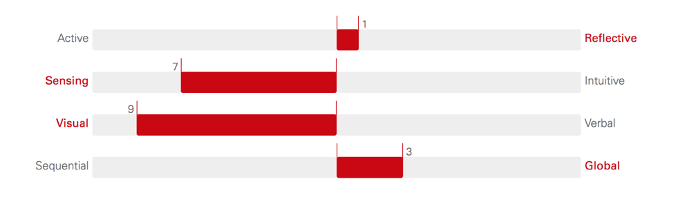

As a matter of fact, a team working in the IT field is indispensable as working with numerous programmers towards the same goal in developing a project will provide lots of benefit for the project development generally and for the developers understanding specifically. Even so, inefficient teamwork can still occur due to misleading team selection.
In order to have efficient team work, it is crucial that I need to understand other programmers characteristics and that of mine with the aim of effective team selection. Below is some significant data that I highlighted for analysing and evaluating suitable members purpose.
S.
It is apparent from the The Index of Learning Style test that I am a reflective and active learner meaning I am comfortable both in working with a detailed plan before execution (reflective learner) as well as just trying ideas without requiring a sketching (active learner). Corresponding to each of the two mentioned characteristics follows a rationale with supporting evidences:
Reflective state: This is when I need a member that can assist me to create a productive plan with detailed structure and schedule before implementation. He/She is required to:
● Being proactive and good at formulating and consistently striving to achieve long-range targets plus arranging and planning approaches to these goals.
● Good at attention to detail in order to go through all of the important points in the plan carefully and eliminate possible problems from scratch.
The suitable candidates for this position are Bao and Thu. An possible explanation is that Bao scores high in Conscientiousness label (Big Five Personality test), similarly, Thu gets a high rate in Sensing label (Myers-Briggs Type Indicator). The two labels both indicate that Bao and Thu are not only hard - working, self - discipline, organized and responsible in their work, they prepare things ahead and follow a structure. In addition, they exhibit a tendency to be practical, highly attentive to details and prefer receiving information through the form of data, facts, experiments. Putting this in application, during drafting, they will help me to devise all necessary courses of action for a project in an elaborate way. Subsequently, predicting unexpected risks and suggesting solutions as well as tracking broken code, see what is missing in the calculation, and provide input on the code during operation.
Active state: This is when I need a member who can assist me in implementing new ideas into application. He/She is required to
● Be quick in seeing and understanding complex ideas when it comes to trying new code.
● Be creative, open to different ideas and willing to try things out
● Think divergently and capable of improvising unforeseen risks
Similarly, Phong and Phat participate in my team for this specific expertise as the results obtained from their Big Five Personality test shows dominance over the Openness label. In other words, Phong and Phat are the type of people who embrace fresh ideas and are great at thinking about together with linking numerous topics and ideas. They are adventurous and always willing to approach new things as well as pursue experience in everyday life. Putting this into practice, during the implementation process, they can do pair programming with other members and contribute to the team new different ways of solving problems or another way to perceive the problems aside from the traditional way of thinking for the purpose of effective changes to the program. Besides, their quick mind can leap straight in to formulate strategies to solve unexpected danger arising when complex system exposure happens.
Agreeableness: Although the Big Five Personality test is not my preference when it comes to represent my characteristics on the last assignment 1, yet I am happy that all of my team members all score high in the Agreeableness label of the test. The findings help me to understand that they understand the importance of the project when fully committed to it and they put other people's needs above their own. My team is able to cooperate with each other as agreeable people are forgiving and trusting and prefer to cooperate rather than contend with others.